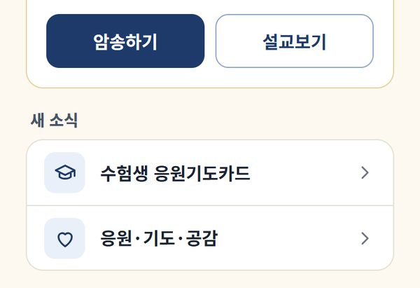
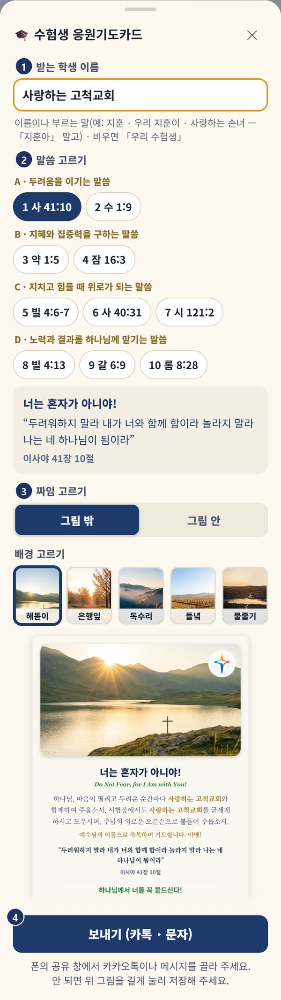
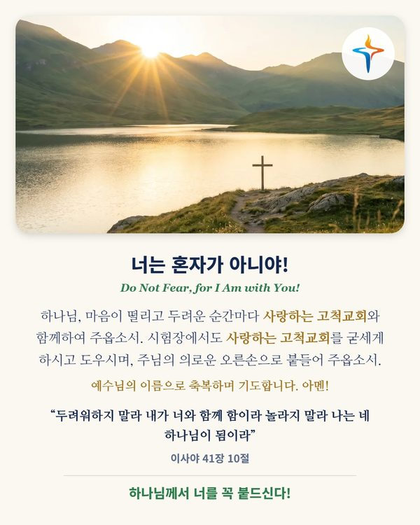

11월 19일 수능을 앞둔 가족·이웃 수험생에게, 이름을 넣은 응원 기도를 그림 한 장으로 카카오톡이나 문자로 보내요.
첫 화면 「이번 주 말씀」 아래 「새 소식」 맨 위의 🎓 수험생 응원기도카드를 눌러요.

받는 학생 이름을 써요. 「김지훈」, 「우리 지훈이」처럼 부르는 이름도 좋아요(「지훈아」처럼 부르는 꼴은 빼고요). 비워 두면 「우리 수험생」으로 들어가요.
말씀 열 가지 가운데 하나를 골라요. 단추를 누르면 바로 아래에 그 말씀이 보여요.
「그림 밖」(위에 그림 · 아래에 글)과 「그림 안」(그림 위에 글) 가운데 고르고, 배경 다섯 가운데 하나를 골라요.
「보내기」를 누르고, 폰의 공유 창에서 카카오톡이나 메시지를 고르면 돼요.

말씀이 열 가지라, 수능 날까지 매일 하나씩 다른 말씀으로 보내며 응원할 수 있어요. 받는 학생마다 보낸 말씀에 ✓ 표시가 붙고, 다음에 열면 그 학생이 아직 받지 않은 말씀이 먼저 골라져 있어요.

• 공유 창이 안 뜨면 그림을 길게 눌러 저장한 뒤, 카카오톡이나 문자에서 사진으로 보내 주세요.
• 그림은 내 폰 안에서 만들어지고, 쓴 이름은 그림과 이 폰에만 남아요(✓ 표시를 위해 — 서버로는 가지 않아요).
• 12월 11일(성적 통지일)까지 첫 화면에 있어요.
• 메뉴가 안 보이면 앱을 껐다가 다시 열어 주세요.